Atelier in Porto Alegre · R. João Guimarães, 31 — Rio Branco
Katalog
Werke zum Bestellen
Wählen Sie ein Werk als Vorlage und geben Sie Ihr von Silvia handgemaltes Bild in der gewünschten Größe in Auftrag. Es gibt keinen Online-Verkauf: Silvia antwortet per WhatsApp oder E-Mail mit Angebot und Lieferzeit.
Jedes Werk hat eine Nummer. Für eine Bestellung oder Fragen nennen Sie einfach die Nummer.
 Weiße Rosen in der GlasvaseStudioai-Kollektion
Weiße Rosen in der GlasvaseStudioai-Kollektion MohnfeldStudioai-Kollektion
MohnfeldStudioai-Kollektion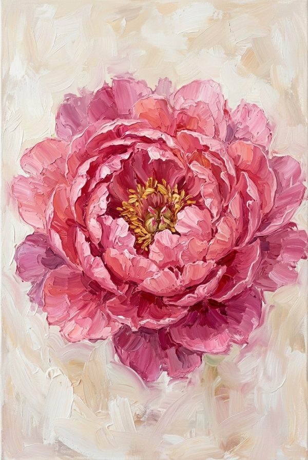
Rosa PfingstroseStudioai-Kollektion Blaue Hortensien im KrugStudioai-Kollektion
Blaue Hortensien im KrugStudioai-Kollektion Sonnenblumen im rustikalen KrugStudioai-Kollektion
Sonnenblumen im rustikalen KrugStudioai-Kollektion Iris und LilienStudioai-Kollektion
Iris und LilienStudioai-Kollektion Magenta Bougainvillea an weißer MauerStudioai-Kollektion
Magenta Bougainvillea an weißer MauerStudioai-Kollektion Lavendel und KamilleStudioai-Kollektion
Lavendel und KamilleStudioai-Kollektion Orange Tulpen im TontopfStudioai-Kollektion
Orange Tulpen im TontopfStudioai-Kollektion FrühlingsstraußStudioai-Kollektion
FrühlingsstraußStudioai-Kollektion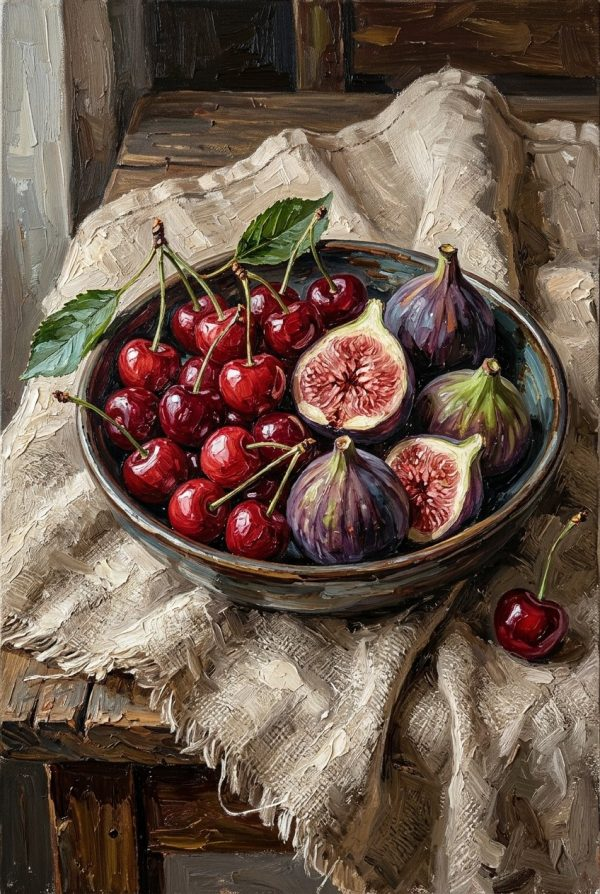
Kirschen und FeigenStudioai-Kollektion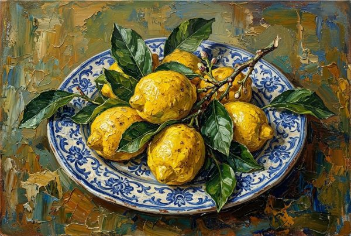
Zitronen auf blauem TellerStudioai-Kollektion Wassermelone und TraubenStudioai-Kollektion
Wassermelone und TraubenStudioai-Kollektion Birnen und GranatäpfelStudioai-Kollektion
Birnen und GranatäpfelStudioai-Kollektion Korb mit OrangenStudioai-Kollektion
Korb mit OrangenStudioai-Kollektion Kaffee, Croissant und ErdbeerenStudioai-Kollektion
Kaffee, Croissant und ErdbeerenStudioai-Kollektion Grüne Äpfel und KupferkesselStudioai-Kollektion
Grüne Äpfel und KupferkesselStudioai-Kollektion Tropische FrüchteStudioai-Kollektion
Tropische FrüchteStudioai-Kollektion Limonade mit MinzeStudioai-Kollektion
Limonade mit MinzeStudioai-Kollektion Avocados, Zitronen und MargeritenStudioai-Kollektion
Avocados, Zitronen und MargeritenStudioai-Kollektion Türkisfarbene WellenStudioai-Kollektion
Türkisfarbene WellenStudioai-Kollektion Leuchtturm auf den FelsenStudioai-Kollektion
Leuchtturm auf den FelsenStudioai-Kollektion Fischerboote im MorgengrauenStudioai-Kollektion
Fischerboote im MorgengrauenStudioai-Kollektion Sonnenschirme am StrandStudioai-Kollektion
Sonnenschirme am StrandStudioai-Kollektion Tropische LaguneStudioai-Kollektion
Tropische LaguneStudioai-Kollektion Möwen in der AbenddämmerungStudioai-Kollektion
Möwen in der AbenddämmerungStudioai-Kollektion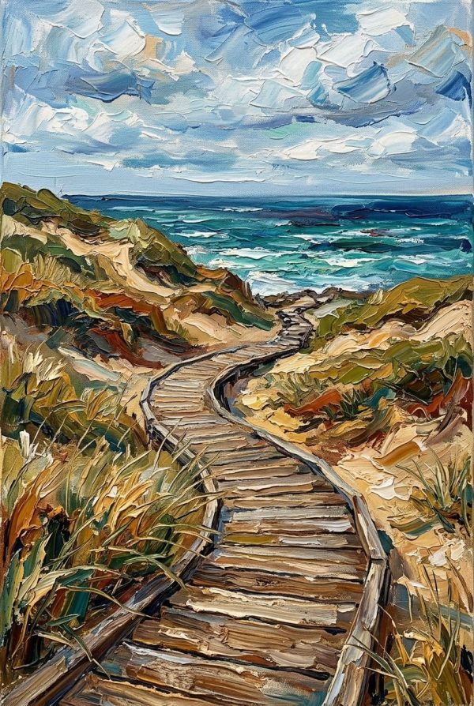
Steg durch die DünenStudioai-Kollektion Felsküste am smaragdgrünen MeerStudioai-KollektionSegelboot auf blauem MeerStudioai-Kollektion
Felsküste am smaragdgrünen MeerStudioai-KollektionSegelboot auf blauem MeerStudioai-Kollektion Ebbe bei SonnenuntergangStudioai-Kollektion
Ebbe bei SonnenuntergangStudioai-Kollektion Straße zwischen blühenden HügelnStudioai-Kollektion
Straße zwischen blühenden HügelnStudioai-Kollektion Kiefern im NebelStudioai-Kollektion
Kiefern im NebelStudioai-Kollektion See zwischen verschneiten BergenStudioai-Kollektion
See zwischen verschneiten BergenStudioai-Kollektion Weinberg im HerbstStudioai-Kollektion
Weinberg im HerbstStudioai-Kollektion Weizenfeld im SturmStudioai-Kollektion
Weizenfeld im SturmStudioai-Kollektion LavendelfeldStudioai-Kollektion
LavendelfeldStudioai-Kollektion Birken im HerbstStudioai-Kollektion
Birken im HerbstStudioai-Kollektion Wasserfall im WaldStudioai-Kollektion
Wasserfall im WaldStudioai-Kollektion Fluss mit WeidenStudioai-Kollektion
Fluss mit WeidenStudioai-Kollektion Pampa bei SonnenuntergangStudioai-Kollektion
Pampa bei SonnenuntergangStudioai-Kollektion Gelbe Straßenbahn in LissabonStudioai-Kollektion
Gelbe Straßenbahn in LissabonStudioai-Kollektion Dächer von Paris in der DämmerungStudioai-Kollektion
Dächer von Paris in der DämmerungStudioai-Kollektion Kanal in Venedig mit GondelnStudioai-Kollektion
Kanal in Venedig mit GondelnStudioai-Kollektion Koloniale HäuserzeileStudioai-Kollektion
Koloniale HäuserzeileStudioai-Kollektion Blumenmarkt im RegenStudioai-Kollektion
Blumenmarkt im RegenStudioai-Kollektion Griechisches DorfStudioai-Kollektion
Griechisches DorfStudioai-Kollektion Trompete in lockeren PinselstrichenStudioai-Kollektion
Trompete in lockeren PinselstrichenStudioai-Kollektion Nr. 163 · Gauchos zu Pferd
Nr. 163 · Gauchos zu Pferd Nr. 162 · Blühende Allee
Nr. 162 · Blühende Allee Nr. 161 · Abend am See
Nr. 161 · Abend am See Nr. 159 · Frau und Hund am Meer
Nr. 159 · Frau und Hund am Meer Nr. 157 · Narzissen
Nr. 157 · Narzissen Nr. 156 · Triptychon: Sonnenuntergang am Strand
Nr. 156 · Triptychon: Sonnenuntergang am Strand Nr. 155 · Margeritenstrauß
Nr. 155 · Margeritenstrauß Nr. 154 · Fahrrad mit Blumen
Nr. 154 · Fahrrad mit Blumen Nr. 153 · Meer und Klippe
Nr. 153 · Meer und Klippe Nr. 152 · Stillleben in Blau
Nr. 152 · Stillleben in Blau Nr. 150 · Strauß in Flieder und Blau
Nr. 150 · Strauß in Flieder und Blau Nr. 148 · Lassoreiter zu Pferd
Nr. 148 · Lassoreiter zu Pferd Nr. 147 · Kaskade gelber BlumenNr. 145 · Abend am Guaíba
Nr. 147 · Kaskade gelber BlumenNr. 145 · Abend am Guaíba Nr. 141 · Knoblauch und Zitrone
Nr. 141 · Knoblauch und Zitrone Nr. 140 · Alte Gasse bei Einbruch der Nacht
Nr. 140 · Alte Gasse bei Einbruch der Nacht Nr. 139 · Blumen im Atelier
Nr. 139 · Blumen im Atelier Nr. 136 · Weiße Blumen in der Nacht
Nr. 136 · Weiße Blumen in der Nacht Nr. 135 · Gaucho zu Pferd
Nr. 135 · Gaucho zu Pferd Nr. 133 · Altes Herrenhaus in Graphit
Nr. 133 · Altes Herrenhaus in Graphit Nr. 131 · Tulpen
Nr. 131 · Tulpen Nr. 130 · Strand mit Kokospalmen
Nr. 130 · Strand mit Kokospalmen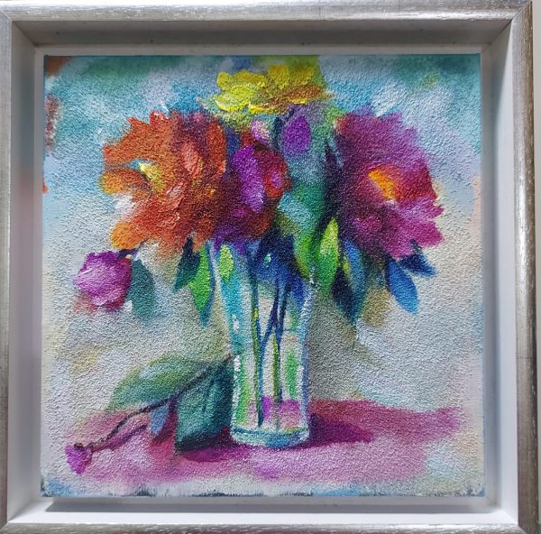
Nr. 128 · Blumen in Relief in der Vase Nr. 126 · Grünes Haus mit Garten
Nr. 126 · Grünes Haus mit Garten Nr. 123 · Blaue und goldene Blumen
Nr. 123 · Blaue und goldene Blumen Nr. 122 · Blumen in der Glasvase
Nr. 122 · Blumen in der Glasvase Nr. 121 · Bananen und rosa Blumen
Nr. 121 · Bananen und rosa Blumen Nr. 120 · Tropischer Garten
Nr. 120 · Tropischer Garten Nr. 119 · Papaya und Blumen
Nr. 119 · Papaya und Blumen Nr. 118 · Granatapfel und weiße Blumen
Nr. 118 · Granatapfel und weiße Blumen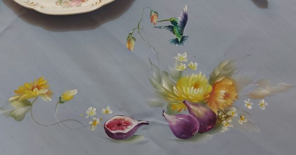
Nr. 117 · Feigen und Blumen Nr. 116 · Kiwi und Vögelchen
Nr. 116 · Kiwi und Vögelchen Nr. 115 · Cashewfrucht und Blumen
Nr. 115 · Cashewfrucht und Blumen Nr. 114 · Pflaumen und Blätter
Nr. 114 · Pflaumen und Blätter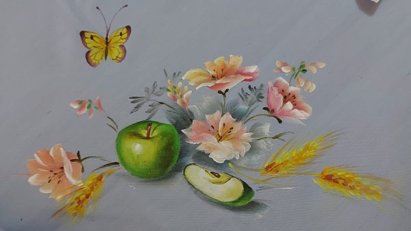
Nr. 112 · Grüner Apfel und Blumen Nr. 111 · Abstrakt in Schwarz und Gold
Nr. 111 · Abstrakt in Schwarz und Gold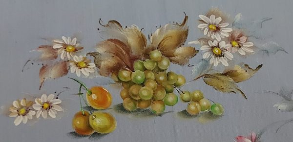
Nr. 110 · Trauben und Margeriten Nr. 109 · Fischer am Strand
Nr. 109 · Fischer am Strand Nr. 108 · Kokosnüsse und Blumen
Nr. 108 · Kokosnüsse und Blumen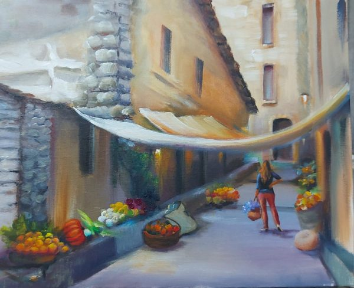
Nr. 107 · Markt in der Altstadtgasse Nr. 106 · Blühende Straße mit MarkisenNr. 104 · Büffel und Löwe
Nr. 106 · Blühende Straße mit MarkisenNr. 104 · Büffel und Löwe Nr. 101 · Blumen in Aquarell
Nr. 101 · Blumen in Aquarell Nr. 100 · Blumenexplosion
Nr. 100 · Blumenexplosion Nr. 97 · Blaue Tür mit Kletterpflanze
Nr. 97 · Blaue Tür mit Kletterpflanze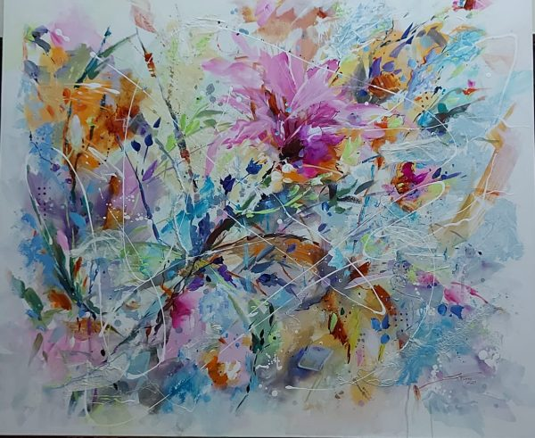
Nr. 96 · Blumen im Wind Nr. 95 · Leichter Blumenzweig
Nr. 95 · Leichter Blumenzweig Nr. 94 · Weiße Pfingstrosen
Nr. 94 · Weiße Pfingstrosen Nr. 92 · Fliederfarbene Blumen in Relief
Nr. 92 · Fliederfarbene Blumen in Relief Nr. 91 · Strand mit BallonNr. 90 · Fischer im BootNr. 89 · Blauer See im Morgengrauen
Nr. 91 · Strand mit BallonNr. 90 · Fischer im BootNr. 89 · Blauer See im Morgengrauen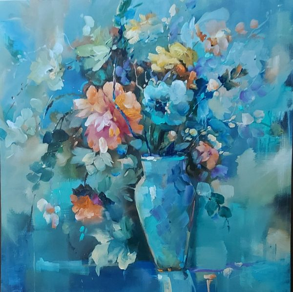
Nr. 87 · Blaue Vase mit Blumen Nr. 86 · Farbenfantasie
Nr. 86 · Farbenfantasie Nr. 85 · Segelboote in der Bucht
Nr. 85 · Segelboote in der Bucht Nr. 82 · Orchideen
Nr. 82 · Orchideen Nr. 80 · Blumen in Transparenz
Nr. 80 · Blumen in Transparenz Nr. 79 · Landarbeiter zu Pferd bei Sonnenuntergang
Nr. 79 · Landarbeiter zu Pferd bei Sonnenuntergang Nr. 77 · Vater und Sohn nachts auf der Straße
Nr. 77 · Vater und Sohn nachts auf der Straße Nr. 72 · Glasgebäude und Garten
Nr. 72 · Glasgebäude und Garten Nr. 70 · Reiher in der Abenddämmerung
Nr. 70 · Reiher in der Abenddämmerung Nr. 69 · Nacht im Kolonialhof
Nr. 69 · Nacht im Kolonialhof Nr. 67 · Mopsporträt
Nr. 67 · Mopsporträt Nr. 66 · Blumenvase in Blau
Nr. 66 · Blumenvase in Blau Nr. 65 · Segelboot bei Sonnenuntergang
Nr. 65 · Segelboot bei Sonnenuntergang Nr. 64 · Holzhaus im Herbst
Nr. 64 · Holzhaus im Herbst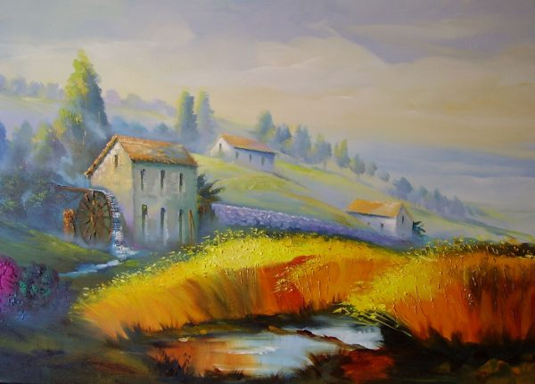
Nr. 56 · Mühle auf dem Feld Nr. 55 · Spaziergang im Regen am Abend
Nr. 55 · Spaziergang im Regen am Abend Nr. 54 · Hündchenporträt
Nr. 54 · Hündchenporträt Nr. 52 · Abstrakt in Rot und Gold
Nr. 52 · Abstrakt in Rot und Gold Nr. 51 · Kaffeemühle und Veilchen
Nr. 51 · Kaffeemühle und Veilchen Nr. 50 · Regennacht in Paris
Nr. 50 · Regennacht in Paris Nr. 49 · Kapelle auf dem Land
Nr. 49 · Kapelle auf dem Land Nr. 48 · Katze mit Blumenkranz
Nr. 48 · Katze mit Blumenkranz Nr. 47 · Abstrakt in Blau und Bernstein
Nr. 47 · Abstrakt in Blau und Bernstein Nr. 46 · Bananen und fliederfarbene BlumenNr. 45 · Sonnenuntergang über der Stadt
Nr. 46 · Bananen und fliederfarbene BlumenNr. 45 · Sonnenuntergang über der Stadt Nr. 44 · Farbiger Strauß in Relief
Nr. 44 · Farbiger Strauß in Relief Nr. 32 · Abstrakt in Rot
Nr. 32 · Abstrakt in Rot Nr. 31 · Abstrakt in Flieder und Gold
Nr. 31 · Abstrakt in Flieder und Gold Nr. 27 · Vogel auf goldenem Grund
Nr. 27 · Vogel auf goldenem Grund Nr. 26 · Hund mit schwarzem Fell
Nr. 26 · Hund mit schwarzem Fell Nr. 22 · Skifahrer im SchneeNr. 21 · Vollmond über den Felsen
Nr. 22 · Skifahrer im SchneeNr. 21 · Vollmond über den Felsen Nr. 20 · Kanal in Venedig
Nr. 20 · Kanal in Venedig Nr. 19 · Gelbes Haus mit Garten
Nr. 19 · Gelbes Haus mit Garten Nr. 18 · Frühlingsblumen, Detail
Nr. 18 · Frühlingsblumen, Detail Nr. 17 · Grüne Vase mit blauen Blumen
Nr. 17 · Grüne Vase mit blauen Blumen Nr. 16 · Vase mit tropischen Blumen
Nr. 16 · Vase mit tropischen Blumen Nr. 15 · Frühlingsblumen mit Blattgold
Nr. 15 · Frühlingsblumen mit Blattgold Nr. 14 · Gelber Regenschirm
Nr. 14 · Gelber Regenschirm Nr. 13 · Straßenbahn und Fahrrad im Regen
Nr. 13 · Straßenbahn und Fahrrad im Regen Nr. 12 · Frau in Rot in der alten Gasse
Nr. 12 · Frau in Rot in der alten Gasse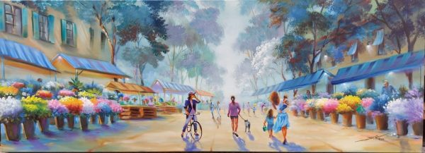
Nr. 11 · Blumenmarkt Nr. 4 · Hund mit blauen AugenNr. 3 · Pferd mit Zügel
Nr. 4 · Hund mit blauen AugenNr. 3 · Pferd mit Zügel Nr. 2 · Orange Blumen am Meer
Nr. 2 · Orange Blumen am Meer Nr. 1 · Frau mit Regenschirm im Blumenladen
Nr. 1 · Frau mit Regenschirm im Blumenladen Radfahrer in der blühenden Straße
Radfahrer in der blühenden StraßeNicht das Richtige dabei? Silvia malt nach Ihrem Foto oder Ihrer Idee.
Per WhatsApp bestellen Silvia eine E-Mail schreiben© 2026 Silvia Porto — Bildende Kunst · Porto Alegre, RSAufträge · WhatsApp (51) 99283-8195 · silviabeust1@gmail.comEntwickelt von Diego Kasper - +Bilder